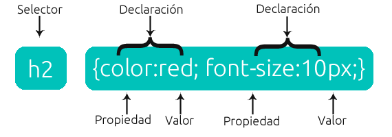
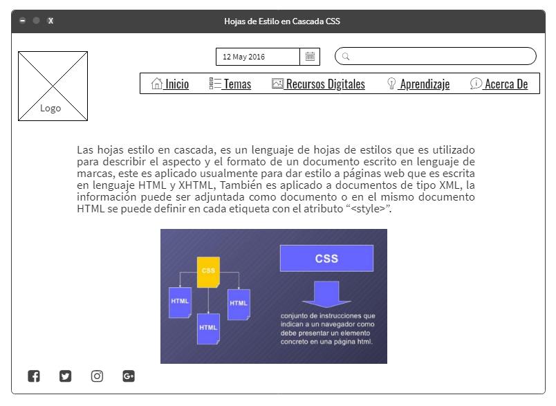

Proposito Del Sitio
El propósito de este sitio es brindar conocimientos sobre las hojas de estilo cascada CSS y Frameworks CSS, lo cual tiene como finalidad mejorar el aprendizaje, sobre temas que son esenciales y de gran importancia, como lo son estos dos temas los cuales permiten mejorar el aspecto y el formato de las páginas web, mejorar los atributos como color de fondo, fuente, crear temas de diseño consistentes, es utilizado como una forma de proveer informacion presentacional en paginas web.
Tema 1
Las hojas de estilo en cascada CSS, es un lenguaje el cual permite definir la apariencia de una documento escrito en un lenguaje HTML, este lenguaje permite mejorar la apariencia de páginas web, utilizando espacios entre elementos, colores, cambiar el estilo de fuente, permitiendo diferenciar y separando la estructura de la presentación, esto brinda la posibilidad de que los usuarios puedan hacer uso de hojas con estilo personalizadas, en este lenguaje existen las declaraciones, propiedades y valores.
DECLARACIONES: Las declaraciones son básicamente consiste en asignarle un valor a una propiedad, por ejemplo asignarle, el color, tamaño de la fuente, márgenes, y el tipo de fuente.

de León, D. P. (s. f.). Hojas de estilo en cascada (CSS). htmlquick. Recuperado 17 de septiembre de 2021, de https://www.htmlquick.com/es/tutorials/css.html
CSS, ¿qué es? - Arume. (s. f.). arumeinformatica. Recuperado 17 de septiembre de 2021, de https://www.arumeinformatica.es/blog/css/
Fernández, N. (2016, 19 mayo). Conceptos básicos de CSS (Hoja de estilos en cascada). Naiara Fernandez. https://www.naiarafernandez.com/conceptos-basicos-css/
Tema 2
El Frameworks es una biblioteca de estilos genéricos, la cual puede ser utilizada para la implementación de diseños web, este brinda utilidades las cuales pueden ser de gran utilidad para díselos web, este proporciona una manera rápida y fácil de implementar diseños, permite editar de manera mas facil las hojas de estilo en cascada, agiliza la repeticion de procesos, posee declaraciones como Reset,Tipografias, Layout y Style, los framework se clasifican en dos tipos.
MULTIPROPOSITO: proporciona utilidades para el desarrollo de diferentes diseños web.
PROPOSITO ESPECIFICO: este tipo proporciona herramientas para los propósitos determinados, por ejemplo orientados para proporcionar herramientas para el desarrollo, orientada para el control de la parte de la interfaz gráfica del usuario

colaboradores de Wikipedia. (2020, 3 mayo). Framework de CSS. Wikipedia, la enciclopedia libre. https://es.wikipedia.org/wiki/Framework_de_CSS
Romero, R. (2021, 24 mayo). Frameworks de CSS para el Desarrollo Web. REGOREMOR. https://www.regoremor.com/desarrollo-web/css/frameworks-de-css-para-el-desarrollo-web/
López, E. (2020, 10 septiembre). Los mejores frameworks css para desarrolladores. Comsoft México. https://www.comsoft-mexico.com/blog/los-mejores-frameworks-css-para-desarrolladores/
Mi Mockup
